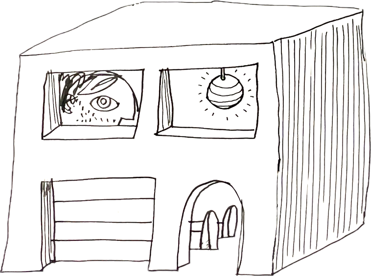
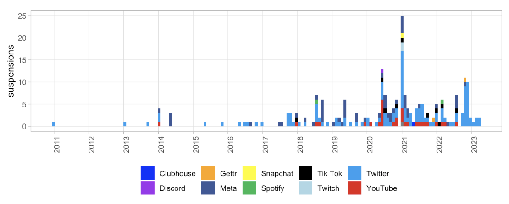
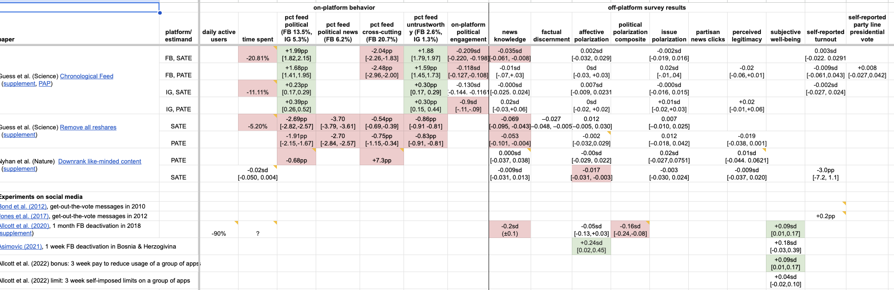
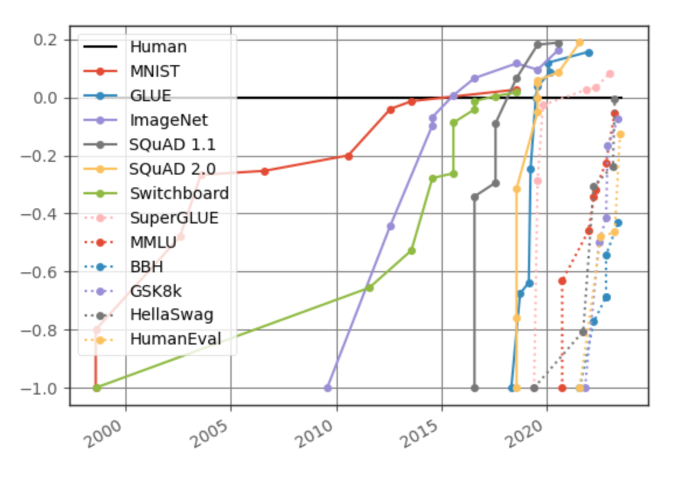
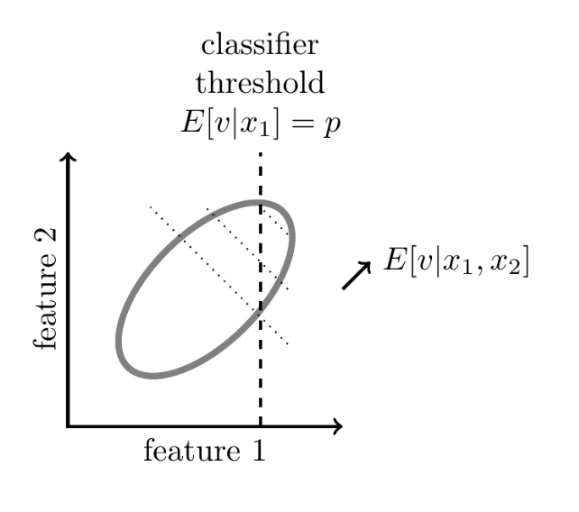
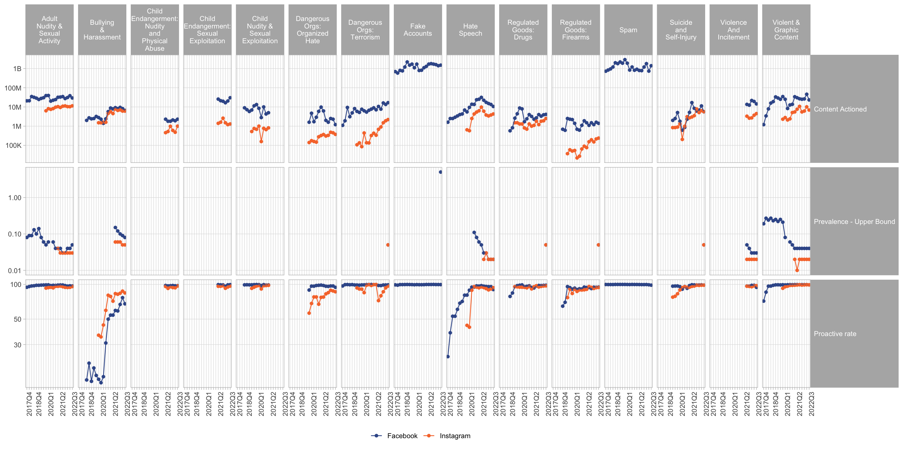

- Hi.
- It’s lovely to be back around Facebook people :).
Advertisements
- Blog post
- 
- Blog post
- “How Much has Social Media affected Polarization?”
- 
- OpenAI work
- The economic impact of AI.
Today
- What effect will AI have on content moderation and communication?
-
I will talk about a dozen different aspects.
- I will talk through some predictions.
-
I add as much evidence and argument as I can, but often I will say “it seems reasonable to expect that…”
- Not sure how persuasive but I feel it’s worth making concrete predictions.
Background on AI
- AI is growing fast.
- 
- AI can classify, but it can also synthesize.
- AI classification can approach human levels. But AI can also synthesize new content, beyond the capabilities of any human.
An Arms Race
- We will be discussing adversarial equilibrium problems.
-
Content moderation, spam filtering, misinformation. New models are available to both sides, & we want to know the equilibrium impact.
- An “internal” property of a message is a function solely of the content.
-
E.g. whether an image contains nudity, whether text contains hate speech, whether a joke is funny. These properties hold independent of any outside facts. AI classifiers are rapidly approaching human-level accuracy for these properties and this means that platforms (and governments) will be able to near-perfectly filter by internal properties even if content-producers have access to the same technology.
- An “external” property of a message depends on some fact outside the message’s content.
-
E.g. whether an image was computer-generated, whether a claim is true, whether a message came from a specific person. Platforms will get better at predicting external properties but they will be outpaced by motivated actors who can manipulate fakes until they become indistinguishable from genuine articles, and able to manipulate lies so they’re indistinguishable from the truth.
Working on Formalizing these Arguments
- Working on formalizing these arguments.
- Have been working with Ines Moreno de Barreda and Dan Quigley to try to make these more formal. I feel it’s an under-studied area.

The Prevalence of Policy-Violating Content Will Decline
- All large internet platforms use automated systems to detect policy-violating content.
-
All major platforms ban or suppress various types of content, e.g. hate speech, incitement to violence, nudity, graphic content. It has not been practical to have a human review each message because the platforms have a high volume of messages being sent with low latency. However automated systems have always been used: early systems simply checked for the appearance of prohibited words or matched against media databases, later systems used classifiers trained on human labels. See a brief history of automated content moderation here.
- Simple classifiers have high offline accuracy.
-
Simple classifiers which just look for the appearance of specific words are often useful, e.g. certain words and phrases are highly predictive of whether text would be labelled as “toxic” or “hate speech.” However this method has many false positives (Chen (2022)) and false negatives (Heiner (2022)).
- Simple classifiers are easily evaded.
-
It is typically easy to alter a violating message such that humans still think it is violating but the classifier does not. As a consequence the accuracy of these classifiers looks much higher offline than online, as users take steps to evade them.
- Gröndahl et al. (2018) note that hate speech detectors can easily be fooled if you “insert typos, change word boundaries or add innocuous words.”
- Han and Tsvetkov (2020) note that simple models are poor at detecting “veiled toxicity” which they define as including “codewords, novel forms of offense, and subtle and often unintentional manifestations of social bias such as microaggressions and condescension.”
- A. Lees et al. (2021) note that simple models are poor at detecting “covert toxicity” which includes “types of toxicity that may not be immediately obvious. Covertly toxic comments may use obfuscation, code words, suggestive emojis, dark humor, or sarcasm …[and] [m]icroaggressions.” These papers evaluate models trained to identify context-independent toxicity, i.e. where the ground truth is human rating of the text alone without additional information on context or audience.
- LLM-based classifiers are approaching human levels of performance.
-
In August 2023 OpenAI described using GPT-4 as a content labeler (Weng, Goel, and Vallone (2023)) and said “[l]abeling quality by GPT-4 is similar to human moderators with light training … [h]owever, both are still overperformed by experienced, well-trained human moderators.”
- LLM-based classifiers handle adversarial cases well.
-
Google’s 2022 generation of text moderation models, which use transformer-based LLMs, are able to correctly classify many types of adversarial messages which are designed to evade simpler classifiers. A. W. Lees et al. (2022) say their classifier performs well against “code-switching, covert toxicity, emoji-based hate, human-readable obfuscation, [and] distribution shift.” Google’s 2023 generation spam classifier uses an embedding that is “robust against typos and character-level adversarial attacks” (Bursztein et al. (2023)).1
1 Arnaud Norman writes about how algorithms to scrape email addresses are often easy to evade, by adding special characters or other obfuscations, but that ChatGPT can straight-forwardly decode most such obfuscations.
- Better classifiers will lower prevalence even if they are available to adversaries.
-
Suppose an adversarial content-producer had access to the same classifier that was used by the platform. The produced could keep testing different variants of a violating post until they found a variant that was truly violating, but not identified as violating by the classifier, i.e. a false negative. However as the platform’s model becomes more accurate there will be fewer possible false positives, and so the task becomes relatively more time-consuming for the adversary, and thus we should expect prevalence to decline.
- The prevalence of policy-violating content has declined dramatically.
-
Meta reports that the prevalence of nudity, bullying, hate speech, and graphic content each declined by a factor of between 2 and 5 between 2017 and 2022, and that the share of identified-violating content that was first identified by an ML model (“proactive rate”) is approaching 100% for most categories. I think much of this decline can be attributed to improvements in the quality of classifiers.2 Mark Zuckerberg has been making predictions for a long time that human raters could be substituted with AI. Although he was over-optimistic about the pace, I think he has been largely correct, e.g. in late 2018 he said “through the end of 2019, we expect to have trained our systems to proactively detect the vast majority of problematic content.”3
2 It is important to remember that the “proactive rate” is the share of detected content that is detected by AI, the share of violating content that is detected by AI will certainly be significantly lower but is not generally reported. See Meta’s Community Standards report and my visualization of this data.
3 Zuckerberg, “A Blueprint for Content Governance and Enforcement”

- Employment of human moderators will likely decline.
-
As computer accuracy improves fewer messages will need to be escalated for human review, additionally fewer humans will be needed to label training data.
- This prediction also applies to government monitoring and censorship.
-
Many governments use some kind of automated scanning tools to intercept or censor messages based on their content, e.g. the US’s NSA and Cybserspace Administration of China. Better AI will allow these agencies to classify every post with reliability as high as if they had a human read each one, thus we should expect obfuscation will become a much less-effective workaround for censorship.
- This prediction would fail if there were hard limits on the performance of AI.
-
It’s conceivable that there are ways of obfuscating content that will remain difficult for an AI to identify for a long time. However even if LLMs cannot identify violating content in real-time it seems likely they could catch up quickly. Suppose humans invent new types of obfuscation, e.g. misspelling words in a particular way. An LLM which is continually trained on human-labeled samples could likely learn the pattern and thus force humans to continually adopt new patterns.
- Prevalence will never decline to exactly zero because it’s inherently noisy.
-
An AI model can never perfectly predict human-rater evaluation because humans are themselves noisy: there is both between-rater variation and within-rater variation in labelling for any given piece of content. Thus if the ground truth is human judgment then even an infallible classifier could not be used to drive prevalence all the way to zero.4
4 Strictly speaking: this will be true if no content has a probability of being labelled as positive by a human of exactly zero.
The Prevalence of Context-Specific Violations Will Increase
- Some messages have a violating significance only to their intended audience.
-
We can define a message as violating in one of two ways: (1) has a violating significance to the average person (average citizen or average user), or (2) has a violating significance to the intended audience of that message.
-
I will define a “contextual violation” as a message that is violating to its intended audience but not to the average person. This is stronger than just having a double meaning where both meanings are clear to all audiences. I am specifically talking about messages which are interpreted in distinct ways by different audiences. Of course contextual violations are often unstable, over time the average person will often learn the contextual meaning.
- Many messages on social media use contextual violations.
-
- Saying “globalist” when your audience understands it to mean “jewish”5
5 A related phenomena is people using selective truths to give an impression that is false.
-
- Saying the opposite of what is meant, e.g. a bigot saying excessively positive things about an ethnic group, or a pro-anorexia poster making anti-anorexic statements sarcastically.
-
- Using euphemisms for illegal substances or illegal acts.
-
- Using emojis of eggplants and peaches with sexual connotations.
-
- Using photos without explicit nudity but which can be read as pornographic.
- Improved detection will cause substitution towards contextual violations.
-
As AI improves the ability to detect violations it seems likely that there will be at least some substitution towards context-specific violations, however as long as there is some cost to using a contextual-violation then we would expect a less than one-for-one substitution.
- Platforms could detect contextual violations if they wanted to.
-
When doing human evaluation then platforms could either (1) provide human raters with detail about the message’s context and audience, or (2) assign human raters to messages based on their experience with that community.6 Likewise AI models could be trained to include rich representation of the context. An additional advantage of adding context is that it can identify and exempt posts that violate the letter but not the spirit of the policy.
6 Platforms already have some policies that include context, e.g. Facebook’s “Bullying and Harassment policy” bans “repeatedly contacting someone in a manner that is unwanted or sexually harassing.”
- Platforms may not want to remove contextual violations.
-
There are reasons why platforms may be reluctant to use context in determining violations: it is more complex, and can lead to awkward PR where the platform is shown to be censoring words and images have a harmless interpretation.
- Additionally platforms care both about being seen to restrict harmful content, as well as about the actual harm prevented.
- Contextual violations have long existed in broadcast media.
-
There have been many cases where contextual violations have been tolerated: e.g. newspapers would allow classified advertisments for prostitutes if described as masseuses, vibrators if described as massage wands, contraception if described as marital aids, and abortion if described as “removal of obstructions”. Thus it seems plausible that platforms will tolerate a substantial amount of contextually-violating content to remain.7
7 In Facebook’s Marketplace it is prohibited to list guns for sale. As a consequence people began to list gun cases, with the understanding that a case was standing in for a gun. Facebook then updated their policy to prohibit selling gun cases. In turn people began to list gun stickers as stand-ins for guns. See WSJ reports from 2020 and 2021.
- Government censorship is unlikely to be constrained by context-specific violations.
- Once a censor discovers that a term has an anti-government significance in a certain context then they are likely to start censoring that term. E.g. China has suppressed online mentions of Winnie the Pooh because it is associated with criticism of Xi Jinping, and in 2022 Hong Kong police arrested protestors for holding blank pieces of paper.8
8 https://www.axios.com/2022/11/28/china-protests-blank-paper-covid
The Prevalence of Variants of Known-Violating Content Will Decline
- Most platforms check content against databases of known-violating content.
-
The databases are often shared across platforms, known as “signal sharing”, e.g. databases of illegal sexual media (PhotoDNA), IP-protected content (Content ID), or terrorist recruitment content (GIFCT).
- Existing equilibrium is cat-and-mouse obfuscation.
-
Sophisticated uploaders obfuscate their content, e.g. by adding noise, and platforms expand their matching algorithms using fuzzy matching.
- Detecting variants of known content is subtly different from detecting violating content.
-
The difference between “does this picture show a handsome face?” and “does this picture show Tom’s face?”
- The latter question becomes complicated: if a picture coincidentally looks like Tom, does it represent Tom? Much 20th century philosophy has been written about these types of issues.
- It seems likely gratuitous will violations to go to zero.
-
Suppose someone wants to violate the policy just for the sake of violating that policy, e.g. they want to show a shocking image. Call this “gratuitous” violations.
- Currently the easiest way to do this is to first find a violating piece of content, then obfuscate it.
- If attackers can use AI synthesis they no longer need to find existing violating content, they can synthesize new ones. The defensive technique of checking against known-violating content becomes much worse.
- However if defenders have AI recognition, then by the same argument as above prevalence will go to zero.
Platforms Will Not Be Able to Identify Bots from Their Behavior
- Most online platforms struggle with automated users (bots) who are disruptive in a variety of ways.
-
One way of protecting against bots is with behavioral tests, e.g. a CAPTCHA test asking users an image-recognition task, or by using on-platform behavior to detect whether a user is human. However improvements in AI mean that computers have human-level performance on image-recognition tasks, and can learn to imitate human-style behavior patterns, thus it seems likely these behavioral tests will become ineffective against sophisticated actors. Searles et al. (2023) finds that most contemporary CAPTCHAs can be solved by computers with higher-than-human accuracy.
- This does not imply that the prevalence of bots will increase.
-
All platforms need some defense against bots so they will have to rely relatively more on other forms of authentication, such as monetary payment, offline identity credentials (government ID, credit card number), hard-to-fake metadata (unique IP address, device ID), or 3rd-party identity provider (Sign in with Google, OpenID, Worldcoin). Thus the barriers to signing up for a service, and especially posting on it, will become higher, but the effect on equilibrium prevalence of bots is ambiguous.
- See Proof of Personhood by OpenAI colleagues (Zoe Hitzig et al.).
Platforms Will Find It Hard to Discriminate between Real and Fake Media
- In some cases the ground truth depends on properties outside the content.
-
I will refer to these properties as “external” in contrast to “internal” properties which depend only on the content such as whether a picture depicts nudity. Some examples of external properties:
- Whether a piece of media was generated in the traditional way (photographing a scene, recording a sound), or has been manipulated or synthesized.
- Whether text was written by a human.
- Whether text was written by a specific person, e.g. by Shakespeare.
- Advances in AI help both forgery-detection and forgery-creation.
-
It is clear that a better statistical model of genuine artefacts will help detect forgeries but it will also help create convincing forgeries.
- Determined forgers will be able to fool humans.
-
It seems likely that the latter effect will dominate: it will gradually become possible to camouflage computer-generated content such that neither a computer nor a human could tell them apart. If the content-producer has access to the platforms’ model then they can keep perturbing their fake media until it is labelled as non-fake.
- We cannot reliably discriminate between real and AI-generated media.
-
As of late 2023, programs to detect synthetically generated media have relatively poor accuracy: OpenAI announced a model to detect LLM-created text in January 2023 but then shut it down in July because of poor performance. In June 2023 the NY Times compared a variety of tools to detect computer-generated images and found that with minimal effort they could all be reliably fooled.
- The prevalence of synthetic media will increase on unmoderated platforms.
-
The major platforms have incentives to limit the prevalence of fake media,9 and can control the prevalence even without reliable classifiers. E.g. Meta and YouTube dramatically decreased the prevalence of misinformation over 2016-2020 not primarily through real-time detection of whether a given claim is false, but by (1) adjusting ranking to penalize publishers who tend to circulate false claims; (2) punishing publishers who circulate proven-false claims. Thus I do not expect overall prevalence of fake factual media to substantially increase on the major platforms.
9 The goals of platforms in content moderation are discussed in my note on ranking, Cunningham (2023).
Fake Media (Deepfakes) Will Not Have a Substantial Influence on Politics
- As synthetic media becomes common people will rely more on provenance.
-
As it becomes cheaper to manipulate and synthesize media then people are likely to become more skeptical and rely relatively more on the provenance of information. Thus although synthetic media will likely circulate I do not think it will have a substantial influence on beliefs in equilibrium.
- It has always been easy to create misleading documents.
-
It is not difficult to forge or alter documents, or edit video in a misleading way. As a consequence mainstream media organizations typically do not publish leaked materials unless they have either a chain or provenance for the leaks or independent confirmation of their content.
- Influential forgeries of documents have been historically rare.
-
In an Appendix below I compile a simple dataset of politically influential document leaks in the US over the past 25 years and estimate around 10% of them were based on forged materials.
- The quantity of false claims circulating on the internet is not primarily constrained by the quality of their content.
-
A great deal of false claims already circulate on the internet, especially in loosely moderated parts: e.g. by email, on Telegram, 4chan, Truth Social, WhatsApp, Twitter. It’s not clear that the quality of the faked media is an important constraint on the volume that circulates.
- It’s not uncommon to find a clip of an interview with a politician edited to make it appear that they are admitting to a crime or secret agenda. If people already take what they see at face value then adding deepfakes seems unlikely to change their opinions substantially. Alternatively if people are skeptical and look for corroborating sources then, again, deepfakes would be unpersuasive. It seems that deepfakes would only be influential if there are a significant population who are exposed to many lies but are not haded because the documentary evidence is not sufficiently strong.
Communication Will Migrate Towards Large Closed Platforms
- Small platforms will be overrun with AI-created content.
-
In particular, AI-created bots, spam, obfuscated violating content, and fake media. This would imply that consumers will tend to migrate to larger closed platforms with more effective defences, and which have more restriction on participation. This continues a general movement over the last 20 years of communication moving from small open platforms (independent email, small forums, mailing lists, independent websites) to large closed platforms (large email providers, large social media platforms).
- People will rely more on established sources of truth.
-
E.g. they will rely relatively more on Wikipedia, Community Notes, and mainstream recognized media sources. The ordinary content-based signs of trustworthiness will become less reliable: having a professional website, well-edited text, well-argued reasoning, and documentary evidence.
- People will rely more on cryptographic signing to verify authenticity.
-
I am not sure how strong this effect will be: it is generally more efficient for an intermediary to verify authenticity of senders than for users to do it themselves. I think we’ve seen that in other domains: (1) PGP signing of email has been less important than email providers filtering spam and phishing; (2) SSL certificates in browsers have been less important than browsers giving warnings for suspected phishing sites (e.g. Google’s safe browsing database of sites with phishing or malware is used to give warnings in Chrome and Safari).
- Pedigree will become more important in publication.
- As an editor accepting submissions (e.g. an academic journal, a literary magazine, a newspaper letters page) the quality of the work submitted is typically correlated with more superficial features such as the grammaticallity and the length. As it becomes easy to synthesize text then those superficial features will become less informative about quality and editors are likely to rely relatively more on hard-to-fake signals like the pedigree of authors: what have they published before, and which college the author went to.
Entertainment will Become Largely Synthetic
- A computer that can detect if a photo is pretty can also create a pretty photo.
-
A classifier that can detect whether a joke is funny should also be able to generate funny jokes.[^jokes] On average people spend around 3 hours per day watching entertainment (TV, YouTube, TikTok, Instagram). It seems likely that trained models will be able to synthesize content that is highly engaging though it’s hard to anticipate what it will look like.
Things Will Get Weird
- People will synthesize completely new violating images/videos.
-
Thiel, Stroebel, and Portnoff (2023) say that, as of early 2023, less than 1% of child sexual abuse media (CSAM) appears to be synthetically generated. However the ability to synthesize has been advancing rapidly, “to the point that some images are only distinguishable from reality if the viewer is very familiar with photography, lighting and the characteristics of diffusion model outputs … it is likely that in under a year it will become significantly easier to generate adult images that are indistinguishable from actual images.”
- Producers will synthesize content to sit on the edge of a category.
-
If platforms take action whenever content passes some threshold then adversarial actors will generate or perturb content such that it sits right below the threshold. If a platform removes a photo whenever more than 50% of raters would say it depicts nudity then producers would upload photos which 49% of raters would say depicts nudity. People would upload movies which almost look like an existing IP-protected movie, and students might submit essays that are close to existing sources but don’t quite trigger the plagiarism detector.
Influential leaks of US political documents since 1997:
| Tripp Tapes | 1997 | audio | Tripp to Starr |
| 2002 | documents | Unknown to Italians to CIA | |
| 2004 | fax of 1970s memo | Unknown to ret colonel to CBS | |
| Abu Ghraib photos | 2004 | photos | Unknown to CBS |
| Baghdad Airstrike | 2007 | video | Chelsea Manning to Wikileaks |
| US Iraq war logs | 2010 | digital docs | Chelsea Manning to Wikileaks |
| US Diplomatic cables | 2010 | digital docs | Chelsea Manning to Wikileaks |
| Romney Tape (“47%”) | 2012 | audio | Bartender to Mother Jones |
| NSA Surveillance Leaks | 2013 | digital docs | Edward Snowden to the Guardian, WaPo |
| DNC emails | 2016 | emails | Unknown to Wikileaks |
| Podesta emails | 2016 | emails | Unknown to Wikileaks |
| Colin Powell emails | 2016 | emails | Unknown to DCLeaks |
| Panama papers | 2016 | documents | Unknown to Süddeutsche Zeitung |
| Donald Trump Access Hollywood Tape | 2016 | video | Unknown to Washington Post |
| China Cables | 2019 | digital docs | Unknown to the ICIJ |
| Hunter Biden laptop | 2020 | docs, audio, video | computer shop to Giuliani to NY Post |
| Los Angeles Council call (“changuito”) | 2022 | audio | Unknown to Reddit to LA Times |